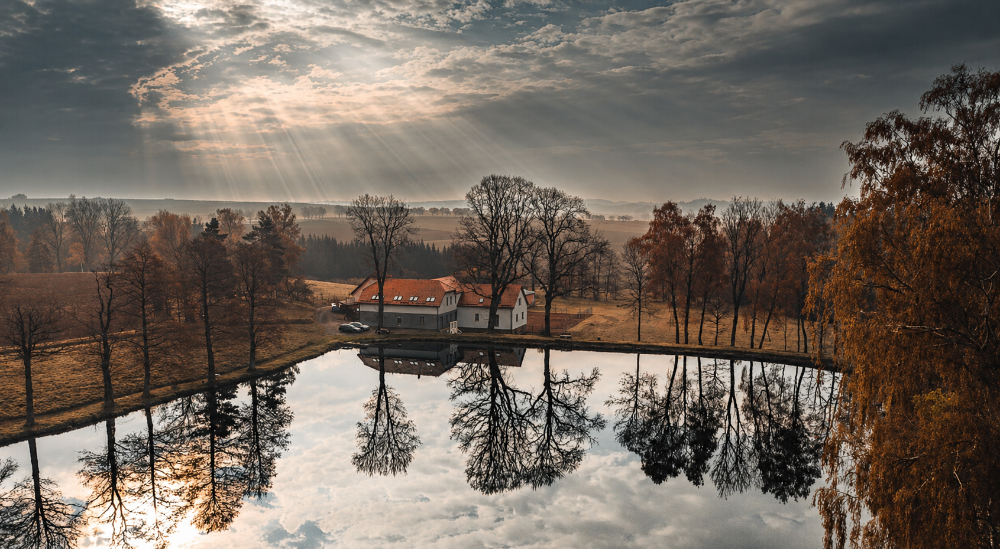
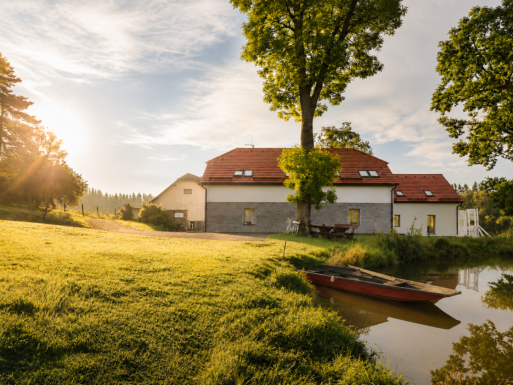
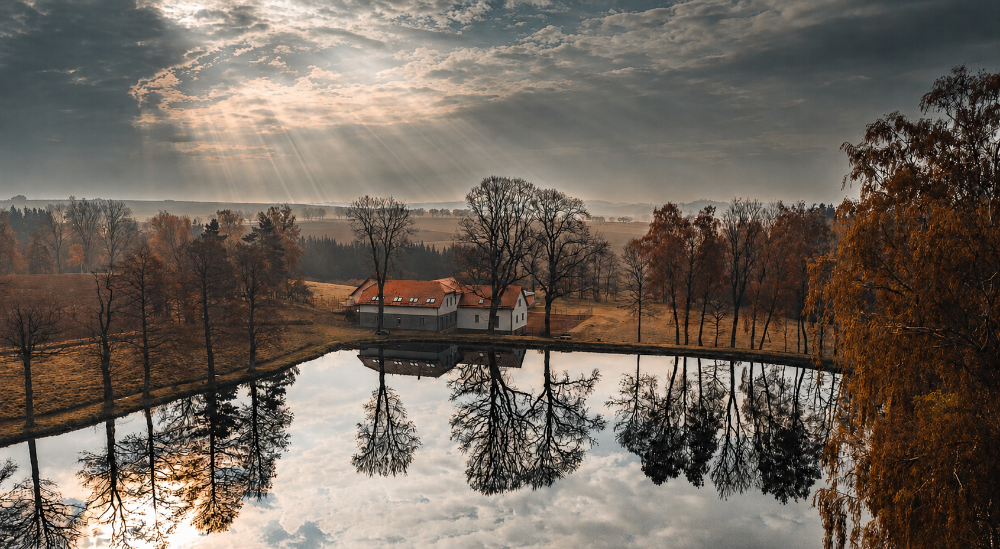

Bereme se. A ten den bychom rádi prožili s vámi.
Den

Místo

Jitkovský mlýn
Starý mlýn u rybníka kousek za Chotěboří — louky, stromy a klid Vysočiny. Obřad bude venku, hostina uvnitř. Všechno na jednom místě.
- Adresa Jitkov 32, 583 01 Chotěboř
-
Příjezd
autem, pár minut z Chotěboře
45 minut z Pardubic · 45 minut z Dlouhého
- Parkování na místě hned za mlýnem
Ubytování
-
Na mlýně
tady bude místo pro rodinu
nikdo nemusí v noci nikam jet
-
V okolí
10 minut autem
zařídíme vám ubytování včetně dopravy
Dary
„Jó, vždyť víš, štěstí je krásná věc... štěstí je tak krásná a přepychová věc, ale prachy si za něj nekoupíš."
…proto nás místo darů potěší příspěvek na společnou cestu.
Co na sebe
Společenský oděv v přírodních tónech — tak, aby ladil s místem. Část dne strávíme venku, myslete i na pohodlné boty.
- krémová
- písková
- karamel
- mocca
- hnědá
Dobré vědět
Můžeme vzít děti?
Doplníme.
Můžu tam přespat?
Doplníme.
Kde zaparkujeme?
Doplníme.
Do kdy máme potvrdit účast?
Doplníme.

Těšíme se na vás
Martin & Michaela